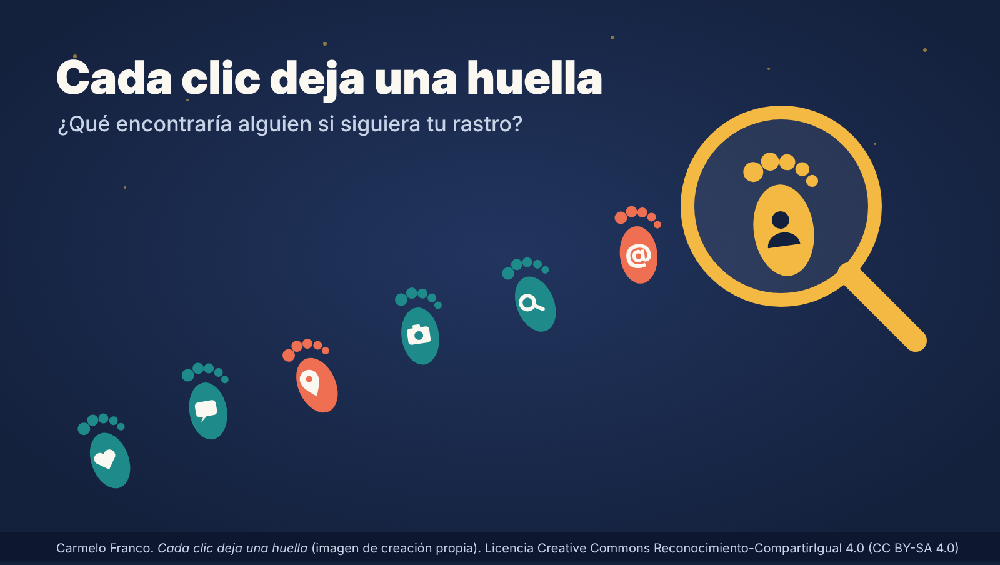

LO QUE PUBLICAS TIENE CONSECUENCIAS
LO QUE SUBES, SE QUEDA

Publicar algo cuesta un segundo, pero quitarlo de internet puede ser casi imposible. Aunque borres una foto, alguien puede haber hecho una captura, haberla descargado o haberla reenviado a un grupo. Desde ese momento, ya no decides tú quién la ve.
Por eso conviene evitar la sobreexposición (en inglés, oversharing): contar en las redes más de lo necesario sobre tu vida, tu casa, tu colegio o tus horarios.
Algunos riesgos que debes conocer
- Ciberacoso. Una foto o un comentario pueden usarse para burlarse de alguien una y otra vez. Si lo ves, no lo compartas y cuéntaselo a un adulto.
- Suplantación de identidad. Con tus fotos y tus datos, alguien puede crear un perfil falso haciéndose pasar por ti.
- Sextorsión. Alguien consigue una imagen íntima y amenaza con difundirla si no haces lo que pide. Nunca es culpa de la víctima, y siempre hay que pedir ayuda.
- Ubicación a la vista. Una foto con la fachada de tu casa, el uniforme del colegio o la ubicación activada dice dónde estás a gente que no conoces.
- Reputación digital. Lo que publicas a los 14 años puede aparecer cuando busques tu primer trabajo.
También cuenta lo que publicas de los demás
Tu huella digital no solo habla de ti: Si subes una foto de un amigo sin preguntarle, estás dejando una huella en su nombre. La imagen de cada persona es suya, y la ley la protege: antes de publicar a alguien, pide permiso.
Piensa un momento. ¿Alguna vez te ha molestado que alguien subiera una foto tuya sin preguntarte? ¿Qué hiciste?